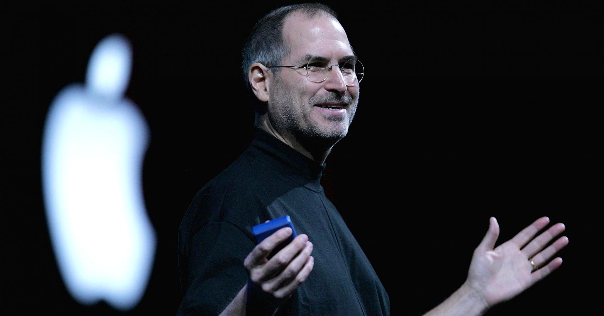

Steven Paul Jobs (San Francisco, California, 24 de febrero de 1955-Palo Alto, California, 5 de octubre de 2011),891011 más conocido como Steve Jobs, fue un empresario y magnate de los negocios del sector informático y de la industria del entretenimiento estadounidense. Fue cofundador y presidente ejecutivo de Apple Inc. y máximo accionista individual de The Walt Disney Company.
Fundó Apple en 1976 junto con un amigo de la adolescencia, Steve Wozniak, con ayuda del excompañero de Jobs en Atari, Ron Wayne en el garaje de su casa. Aupado por el éxito del Apple II Jobs obtuvo una gran relevancia pública, siendo portada de Time en 1982. Contaba 26 años y ya era millonario gracias a la exitosa salida a bolsa de la compañía a finales del año anterior. La década de los 80 supuso la entrada de potentes competidores en el mercado de los ordenadores personales, lo que originó las primeras dificultades empresariales. Su reacción fue innovar, o mejor dicho, implementar: a principios de 1984 su compañía lanzaba el Macintosh 128K, que fue el primer ordenador personal que se comercializó exitosamente que usaba una interfaz gráfica de usuario (GUI) y un ratón en vez de la línea de comandos. Después de tener problemas con la cúpula directiva de la empresa que el mismo fundó, renunció. Jobs vendió entonces todas sus acciones, salvo una. Ese mismo año recibía la Medalla Nacional de Tecnología del presidente Ronald Reagan, cerrando con este reconocimiento esta primera etapa como emprendedor. Regresó en 1997 a la compañía, que se encontraba en graves dificultades financieras, y fue su director ejecutivo hasta el 24 de agosto de 2011. En ese verano Apple sobrepasó a Exxon como la empresa con mayor capitalización del mundo.
Durante los años 90 transformó una empresa subsidiaria adquirida a Lucasfilm en Pixar, que revolucionó la industria de animación con el lanzamiento de Toy Story. La integración de esta compañía en Disney, de la que era proveedor, convertiría a Jobs en el mayor accionista individual del gigante del entretenimiento. En el año de su muerte, su fortuna se valoraba en 8300 millones de dólares21 y ocupaba el puesto 110 en la lista de grandes fortunas de la revista Forbes.
En su segunda etapa en Apple, también cambió el modelo de negocio de la industria musical: aprobó el lanzamiento del iPod en 2001, y en 2003 la tienda online de música de iTunes, que en siete años vendió más de 10 000 millones de canciones y dominó completamente el negocio de música en línea, a un precio de 0,99 USD por canción descargada. Ya en 2009 lograba acaparar el 25 por ciento de la venta de música en los Estados Unidos, y es la mayor tienda musical por volumen de ventas de la historia. Según el registro de patentes de los Estados Unidos, 323 patentes de Jobs figuran a nombre de Apple.
Primeros años
- Steve Jobs nació en San Francisco (California) en el año 1955, fruto de la relación entre Abdulfattah Jandali, un inmigrante sirio musulmán, y Joanne Carole Schieble, una estadounidense de ascendencia suiza y alemana, dos jóvenes estudiantes universitarios que lo entregarían en adopción a una pareja de clase media, Paul y Clara Jobs (Hagopian) de origen armenio. Sus padres biológicos se casarían luego y tendrían otra hija, la novelista Mona Simpson, a quien Steve no conocería hasta la edad adulta.
En esa nueva familia Steve creció junto a su otra hermana, Patty. Su padre, Paul Jobs, era maquinista en la compañía estatal de transporte ferroviario y su madre ama de casa.
En 1961 la familia se trasladó a Mountain View, una ciudad al sur de Palo Alto que empezaba a convertirse en un centro importante de la industria de la electrónica. Allí asistió a la escuela primaria Cupertino Middle School y a la secundaria Homestead H.S., también en Cupertino. A Jobs le interesaban bastante la electrónica y los gadgets, razón que le llevó a unirse a un club llamado Hewlett-Packard Explorer Club, donde ingenieros de Hewlett-Packard mostraban a los jóvenes sus nuevos productos. Fue allí donde Steve vio su primera computadora, a la edad de 12 años. Quedó tan impresionado que supo de inmediato que él quería trabajar con computadores.
Ya en la secundaria asiste a charlas de Hewlett-Packard. En una ocasión, Steve preguntó al por entonces presidente de la compañía, William Hewlett, sobre algunas partes que necesitaba para completar un proyecto de clase. William quedó tan impresionado que se las proporcionó y le ofreció realizar unas prácticas de verano en su compañía. Steve sería luego contratado como empleado veraniego, coincidiendo allí con Steve Wozniak por medio de un amigo mutuo, Bill Fernandez.
En 1972 entra en la universidad Reed College de Portland (Oregón). Asiste a ella tan solo 6 meses antes de abandonarla, debido al alto coste de sus estudios. En lugar de regresar a casa, continúa asistiendo a clases como oyente unos 18 meses más, viviendo a base de trabajos con ingresos ínfimos. Curiosamente, sus estudios en caligrafía, enseñada por Robert Palladino, le serían de utilidad cuando diseñara las tipografías del primer Mac.
Tras dos años fuera de casa, en otoño de 1974 regresa a California con el objetivo de realizar un retiro espiritual en la India y consigue un trabajo como técnico en la empresa fabricante de juegos de video Atari Inc., donde colaboró en la creación del juego Breakout. De la mano de Steve Wozniak comienza a asistir a las reuniones del Homebrew Computer Club, donde Wozniak le contó que estaba intentando construir un pequeño computador casero. Jobs se mostró especialmente fascinado con las posibilidades mercantiles de la idea de Wozniak y le convence para fabricar y vender uno. Steve Jobs se encarga de las ventas y negociaciones y Steve Wozniak, en secreto, de construir la máquina electrónica.
Según afirma Nolan Bushnell, luego de su regreso de la India a donde fue acompañado por un antiguo compañero de la escuela secundaria, y más tarde primer empleado de Apple, Daniel Kottke, decidió renunciar a Atari y fundar Apple Computer, Steve ofreció a Bushnell un porcentaje de Apple, 50 000 dólares, el cual no aceptó. Durante este tiempo, experimentó con drogas psicodélicas, LSD, llamando a sus experiencias como "una de las dos o tres cosas más importantes que había hecho en su vida".
Inicios de Apple Computer
- Debido a las exigencias de su contrato con Hewlett-Packard, Wozniak tuvo que dar a conocer su intención de construir un computador personal a la empresa, que desechó la idea por considerarla ridícula. Fue así como en 1976 nació Apple Computer Company.
Tras la consecución del primer computador personal, bautizado como Apple I, Jobs se dedicó a su promoción entre otros aficionados a la informática, tiendas y ferias de electrónica digital, llegando a vender unos 200 ejemplares. A partir de entonces, el crecimiento de Apple fue notable. En tan solo 10 años, Apple se convirtió en una empresa con 4000 empleados y Jobs, con 27 años, era el millonario más joven de 1982.
A principios de 1983 vio la luz Lisa, el primer computador personal con Interfaz gráfica del usuario diseñado especialmente para gente con poca experiencia en informática. Su precio, más caro que el de la mayoría de ordenadores personales de la competencia, no facilitó que el nuevo producto fuese precisamente un éxito de ventas, perdiendo Apple aproximadamente la mitad de su cuota de mercado en favor de IBM.
En un intento por mantener la competitividad de la compañía, Steve Jobs, ya convertido en ejecutivo, convenció a John Sculley, director ejecutivo de Pepsi-Cola, para tomar las riendas de Apple.
En la conferencia anual de Apple del 24 de enero de 1984, Jobs presentó con grandes expectativas, el Apple Macintosh, el primer ordenador personal de Apple con ratón. Sin embargo Macintosh no alcanzó las expectativas comerciales esperadas.
Hacia finales de 1984 las diferencias entre Sculley y Jobs se iban haciendo cada vez más insalvables, hasta el punto de deteriorarse la relación, principalmente por el proyecto macintosh. En mayo de 1985, en medio de una profunda reestructuración interna que se saldó con el despido de 1200 empleados, Sculley relegó a Jobs de sus funciones como líder de la división de Macintosh.
Tras varios meses de resignación, el 17 de septiembre de 1985, Steve Jobs abandonó la compañía que él mismo había fundado.
En esa época Jobs había desarrollado un estilo gerencial agresivo y un liderazgo irrespetuoso con sus empleados; a pesar de todo, se le consideró como el empresario más exitoso de su generación.
Fundación de Pixar
- Tras abandonar Apple en 1986, Steve Jobs compra por 5 millones de dólares la empresa The Graphics Group destinando otros 5 millones adicionales como inversión, conocida en lo sucesivo como Pixar, una subsidiaria de Lucasfilm especializada en la producción de gráficos por computador.
Steve Jobs empezó a firmar varios acuerdos para producir películas animadas para la compañía Walt Disney. En 1995 se estrenó en los cines Toy Story, el primer largometraje generado completamente por computadora, conseguido con su propio software de renderización, RenderMan. Toy Story fue el mayor éxito de taquilla de 1995 y la primera película del binomio Walt Disney-Pixar en ganar un premio Óscar.
En noviembre de 2001, Pixar estrena Monsters, Inc., recaudando con ella 780 millones de dólares en todo el mundo, convirtiéndose en la película animada más taquillera hasta ese momento. Sus éxitos siguieron con Buscando a Nemo (2003), Cars (2006), WALL-E (2008) y Up (2009), entre otras, las cuales obtuvieron la aprobación de la crítica y el público.
En los años 2003 y 2004, cuando el contrato de Pixar con Disney se estaba acabando, el director ejecutivo de Disney, Michael Eisner, intentó sin éxito negociar un nuevo acuerdo, y en los comienzos de 2004, Jobs anunció que Pixar podría buscar un nuevo socio para distribuir sus películas después de que expirara su contrato con Disney. En octubre de 2005, Bob Iger sustituyó a Eisner en Disney y trabajó rápidamente para enmendar las relaciones con Jobs y Pixar. El 24 de enero de 2006, Jobs e Iger anunciaron que Disney había acordado comprar Pixar en una transacción de acciones por valor de $7,400 millones. Cuando el acuerdo se cerró, Jobs se convirtió en el mayor accionista individual en la compañía de Walt Disney, con aproximadamente el siete por ciento de las acciones de la empresa. Una vez completada la fusión, Jobs recibió ese 7% y se incorporó al Consejo de Administración como el mayor accionista individual. Después de la muerte de Jobs, sus acciones de Disney fueron trasladadas al Fideicomiso Steven P. Jobs dirigido por Laurene Jobs.
Creación de NeXT Computer
- Tras dejar Apple, a los 30 años de edad, decidió continuar su carrera empresarial en la industria de la computación y fundó la empresa NeXT Computer Inc., con una inversión de $7 millones de dólares. Reunió para el nuevo proyecto a 7 de sus antiguos empleados en Apple: Bud Tribble, George Crow, Rich Page, Susan Barnes, Susan Kare y Dan'l Lewin. En el plan de negocios se estableció que, al igual que se hacía en Apple, la compañía vendiese al cliente no solo el hardware, sino también el sistema operativo y parte del software de usuario.
La primera estación de trabajo de NeXT fue presentada el 12 de octubre de 1988. Recibiría oficialmente el nombre de NeXT Computer, si bien fue ampliamente conocida como El Cubo (The Cube, en idioma inglés) por su distintiva caja de aleación de magnesio en forma de cubo. El sistema operativo de la nueva máquina fue bautizado como NeXTSTEP.
Las ventas de los computadores de NeXT fueron relativamente modestas, con un total estimado de 50 000 unidades en los 10 años que estuvo operativa la división de hardware. Su sistema operativo orientado a objetos y entorno de desarrollo fueron, en cambio, muy influyentes. A pesar de su escasa penetración en el mercado, uno de estos equipos sirvió para que el científico Tim Berners Lee creara el concepto de World Wide Web que revolucionaría a la red Internet.
Como consecuencia, Jobs en 1993 centró la estrategia de su compañía en la producción de software, cambiando el nombre de la empresa por el de Next Software Inc. Uno de las decisiones más llamativas fue la venta de equipos NeXT construidos alrededor de los microprocesadores Intel 486 y SPARC.
Apple Computer anunció el 20 de diciembre de 1996 la adquisición de NeXT Software por 400 millones de dólares con el fin de actualizar el sistema operativo de las computadoras Macintosh, después del fracaso de la compañía con Copland, un proyecto que nunca llegó a terminarse. Así, Steve Jobs volvió a formar parte de la compañía Apple.
El regreso de Apple
- La vuelta de Steve Jobs a la empresa Apple se produjo cuando la empresa se encontraba en declive, así que se decidió a recuperar el control de ésta, se ganó la confianza de la dirección de la compañía en detrimento del entonces director ejecutivo, Gil Amelio, logrando que se lo nombrara director interino el 16 de septiembre de 1997.
Algunas de las primeras medidas de Jobs en su nuevo puesto fueron firmar un acuerdo con Microsoft, por el cual esta empresa invertiría dinero en Apple a cambio de un 4% de sus acciones, aunque este porcentaje no le diera el derecho a voto en las decisiones de la junta directiva de la empresa; el suministro del software de ofimática Office para los computadores Macintosh y el fin de las disputas por la interfaz gráfica. La noticia de esta medida no fue bien recibida.
De similar aceptación resultaron la cancelación del programa de licencias de Mac OS a otros fabricantes de hardware, como Power Computing, empresa que sería finalmente adquirida por Apple, lo que impidió la popularización de esta plataforma informática y el descontinuar el Apple Newton, un dispositivo de características similares a un asistente digital personal.
Estas medidas, sin embargo, permitieron a la compañía centrar sus esfuerzos en mejorar sus productos y probar nuevas líneas de negocio, como la tienda digital de música iTunes Store, los reproductores de audio iPod y los computadores iMac, que resultaron ser un gran éxito.
En 2006 Jobs firmó un contrato con Intel para utilizar procesadores de la arquitectura x86 en todos sus computadores de escritorio y portátiles.
En diciembre de 2009 Steve Jobs fue elegido director ejecutivo del año por la revista Harvard Business Review por «incrementar en 150 000 millones el valor en bolsa de Apple en los últimos 12 años».
Renuncia
- El 24 de agosto de 2011 presentó su renuncia como CEO de Apple, y fue sustituido por Tim Cook. A partir de esta fecha y hasta su muerte, fue el presidente de la Junta Directiva de Apple. Horas después del anuncio, se redujo en 5 puntos porcentuales el valor de las acciones de Apple. Según la revista de finanzas Forbes, la renuncia afectaría negativamente a Apple y otras empresas, incluyendo Walt Disney Company donde Jobs era director. El día 24 de agosto de 2011, el valor de las acciones de Walt Disney Co. se redujo en 1,5 puntos porcentuales.
El día de su muerte la capitalización bursátil de Apple era de 350 670 millones de dólares. Cuando salió a bolsa en 1980 una acción costaba, según su precio ajustado, lo que hoy serían unos dos euros. El día en que murió, una acción valía más de 280 (377 dólares) incluyendo unos intereses financieros envidiables. Estos datos avalan el reconocimiento como ejecutivo que lo acompañó en la última etapa de su carrera. En palabras de Rupert Murdoch, «Steve Jobs fue simplemente el mejor consejero delegado de su generación.» Coincidía en ello con la revista Harvard Business Review, que ya lo reconoció como tal a finales del 2009.
- En 1985, condecorado con la Medalla Nacional de Tecnología por el presidente estadounidense Ronald Reagan.
- En 2004, Premio al Visionario en los Premios Billboard de Entretenimiento Digital.
- El 27 de noviembre de 2007 fue nombrado la persona más poderosa del mundo de los negocios por la revista Fortune.
- El 5 de diciembre de 2007 el entonces gobernador de California, Arnold Schwarzenegger, le incluyó en el Salón de la Fama de California, ubicado en el Museo de California de Historia, la Mujer y las Artes.
- En octubre de 2009 fue elegido "Empresario de la Década" por la revista Fortune.
- En diciembre de 2009 fue elegido director ejecutivo del año por la revista Harvard Business Review por «incrementar en 150 000 millones el valor en bolsa de Apple en los últimos 12 años.»